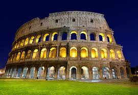
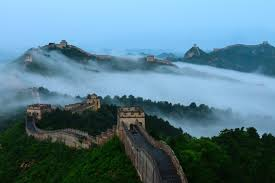
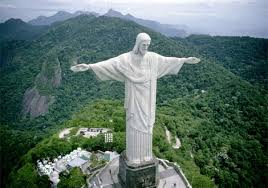
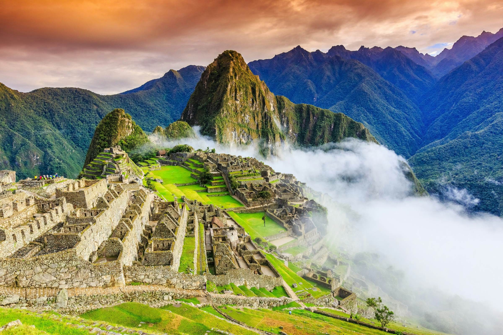
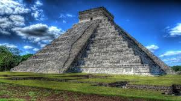
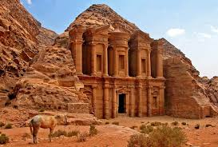

Seven Breathtaking Natural Wonders That Define Our Planet
THE COLOSSEUM-ITALY

- The Colosseum, also known as the Flavian Amphitheater, is an iconic elliptical amphitheater located in the heart of Rome, Italy. It was constructed between 70 and 80 AD under the Flavian emperors—Vespasian initiated the building, and his son Titus completed it—serving as a grand gift to the Roman people following the reign of Emperor Nero.
- It spans approximately 189 meters in length and 156 meters in width, with a seating capacity exceeding 50,000 spectators, making it the largest amphitheater ever built in ancient times and still the largest standing amphitheater today.
- Its location replaced Nero’s artificial lake from his Domus Aurea, symbolizing a return of this land to the people and a display of imperial power and public generosity.
THE GREAT WALL OF CHINA-CHINA
- The Great Wall of China is one of the New Seven Wonders of the World, recognized for its extraordinary historical, architectural, and military significance.
- Unlike a continuous barrier, it comprises a vast network of walls, fortifications, beacon towers, passes, and barracks spanning over 21,000 kilometers across 15 northern provinces of China, from the Bohai Sea to the Gobi Desert.
- Construction Timeline: Its origins stretch back to the 7th century BCE, but the first emperor of a unified China, Qin Shi Huang, began connecting earlier regional fortifications around 220 BCE to defend against northern invasions.

THE TAJ MAHAL-INDIA

- The Taj Mahal is an iconic white marble mausoleum in Agra, India, renowned as one of the greatest achievements of Indo-Islamic architecture and recognized as a UNESCO World Heritage Site.
- It was commissioned in 1631 by Mughal Emperor Shah Jahan as a tomb for his beloved wife, Mumtaz Mahal, and to symbolize his deep love and grief after her death.
- Built between 1632 and 1648, with adjunct buildings and the garden completed by 1653; more than 20,000 workers and artisans were involved, including specialists from India, Persia, the Ottoman Empire, and Europe.
CHRIST THE REDEEMER-BRAZIL
- Christ the Redeemer is a monumental Art Deco statue of Jesus Christ situated atop Mount Corcovado in Rio de Janeiro, Brazil. It is one of the New Seven Wonders of the World, celebrated for its cultural, religious, and architectural significance.
- Location & Dimensions: The statue stands at 98 feet (30 meters) tall, not including its 26-foot (8 meters) pedestal. Its outstretched arms span 92 feet (28 meters), and it weighs approximately 635 metric tons.
- It is perched on the 2,310-foot (704-meter) summit of Mount Corcovado, overlooking the city and Guanabara Bay.The arms stretch 28 meters (92 feet) wide.

MACHU PICCHU-PERU

- Machu Picchu is a 15th-century Inca citadel located in southern Peru, perched on a mountain ridge 2,430 meters (7,970 feet) above sea level in the Andes.
- It is celebrated as one of the New Seven Wonders of the World (recognized in 2007) and is a UNESCO World Heritage Site (since 1983). The site sits above the Sacred Valley, about 80 km (50 miles) northwest of Cusco, with the Urubamba River flowing below.
- The city was abandoned in the 16th century during the Spanish conquest, but the Spanish never discovered it; its isolation preserved Machu Picchu until its introduction to the outside world by Hiram Bingham in 1911.
CHICHEN ITZA-MEXICO
- Chichén Itzá is an ancient Maya city located on the Yucatán Peninsula in Mexico and is recognized as one of the New 7 Wonders of the World. The most iconic structure at the site is the step pyramid known as El Castillo or the Temple of Kukulcán, built between the 9th and 12th centuries CE by the pre-Columbian Maya civilization.
- This pyramid stands about 24 meters (79 feet) high, with the temple at the top adding another 6 meters (20 feet), for a total height of 30 meters (98 feet).
- 365 steps: Each of the four sides of the pyramid has 91 steps, and with the temple platform counted as the final step, the total is 365 steps—matching the days in the Maya solar calendar year (Haab’).

PETRA-JORDAN

- Petra, often called the "Rose City" for its pink-hued sandstone cliffs, is an ancient archaeological wonder in southern Jordan and one of the New 7 Wonders of the World.
- Originally known as Raqmu, Petra was established by the Nabataeans, a nomadic Arab people, in the 4th century BC and became the capital of their kingdom.
- Its strategic position at the crossroads of major caravan routes allowed Petra to flourish as an important trading hub, connecting Arabia, Egypt, and the Mediterranean with China and India.
click here:to move up quote